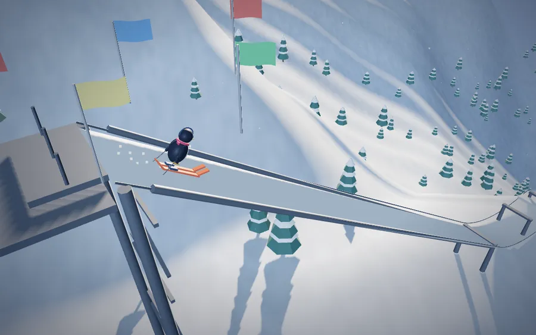
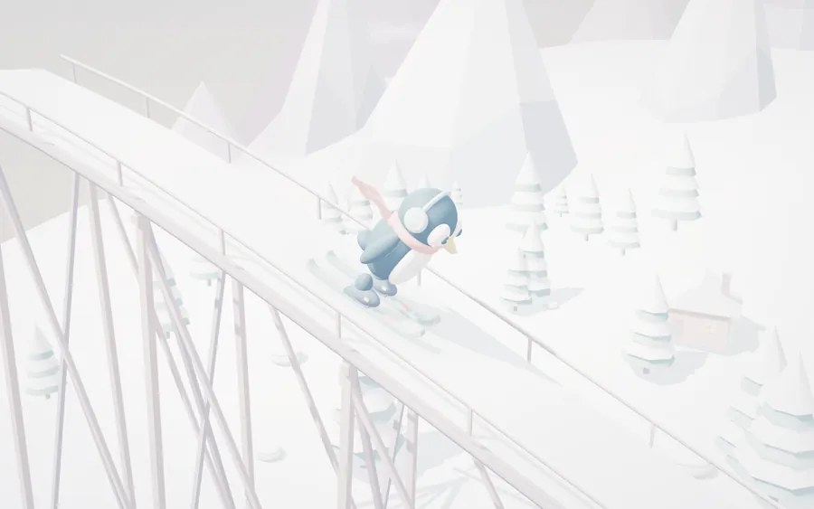
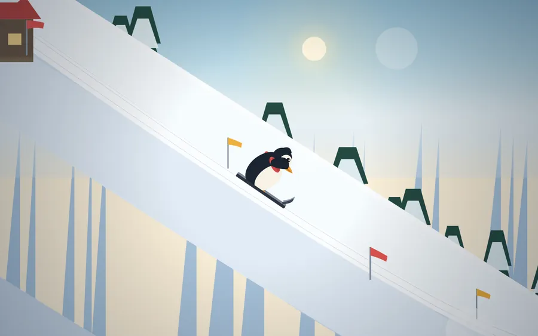
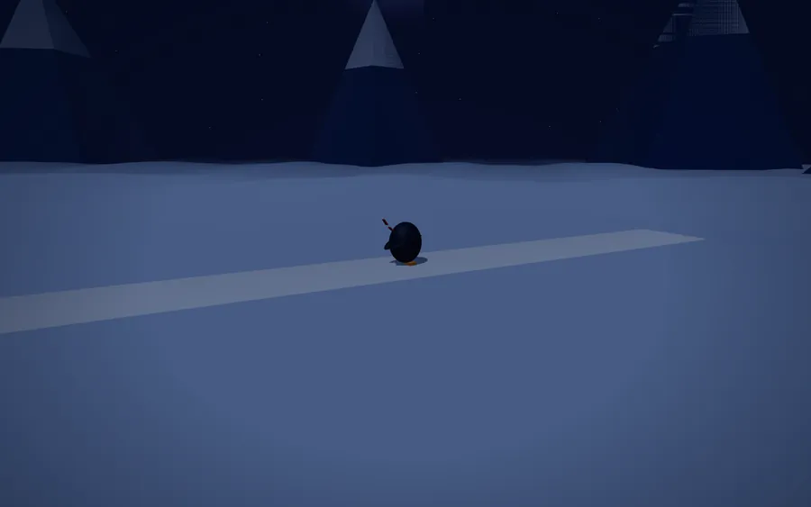
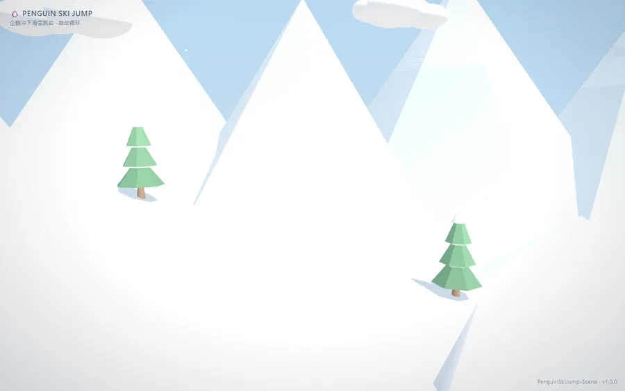
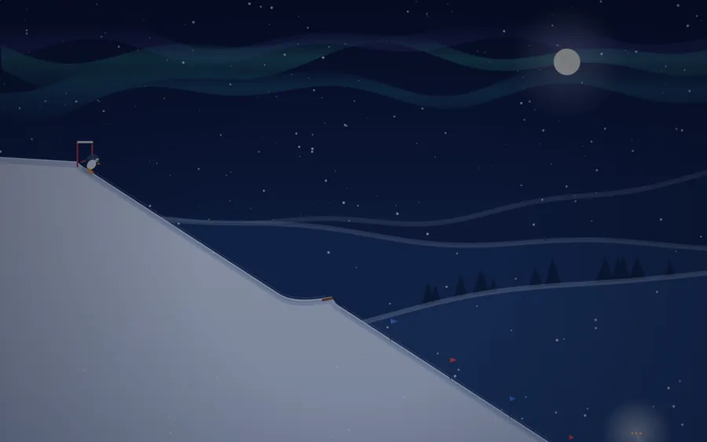

#185Jev
起跳腾空84
相机跟随92
场景阴影87
企鹅姿态77
#275Jev
起跳腾空75
相机跟随90
场景阴影82
企鹅姿态49
#362Jev
起跳腾空46
相机跟随57
场景阴影78
企鹅姿态72
#461Jev

起跳腾空65
相机跟随83
场景阴影77
企鹅姿态10
#553Jev
起跳腾空56
相机跟随78
场景阴影61
企鹅姿态13
#653Jev

起跳腾空98
相机跟随75
场景阴影0
企鹅姿态17
#751Jev
起跳腾空73
相机跟随57
场景阴影36
企鹅姿态24
#850Jev

起跳腾空92
相机跟随49
场景阴影21
企鹅姿态11
#950Jev

起跳腾空69
相机跟随75
场景阴影23
企鹅姿态22
#1046Jev

起跳腾空38
相机跟随52
场景阴影55
企鹅姿态41
#1144Jev

起跳腾空42
相机跟随70
场景阴影49
企鹅姿态15
#1231Jev
起跳腾空1
相机跟随2
场景阴影75
企鹅姿态59
#1311Jev
起跳腾空8
相机跟随6
场景阴影1
企鹅姿态32